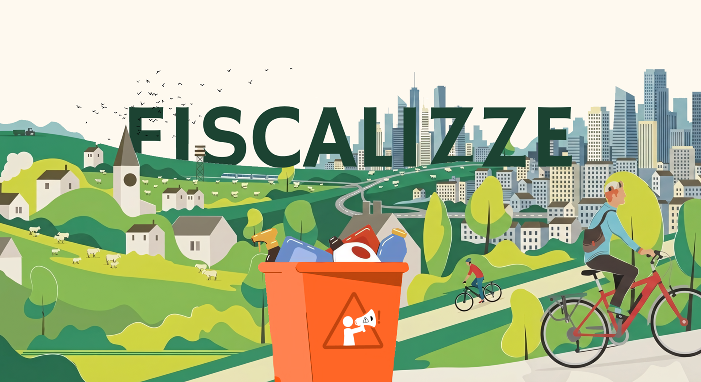

📍 Localize
Identifique o ponto de descarte irregular e informe a localização.

Registre descartes irregulares de resíduos e ajude a manter
Eunápolis limpa. Sua denúncia faz a diferença.
Em três passos simples você ajuda a fiscalizar e melhorar sua cidade.
Identifique o ponto de descarte irregular e informe a localização.
Tire fotos da ocorrência e descreva o que está acontecendo no local.
Receba um protocolo e acompanhe o status da denúncia.
Preencha os campos abaixo para registrar uma denúncia de descarte irregular.
1 – Registro: Você recebe um protocolo imediato.
2 – Análise: A ocorrência passa por avaliação.
3 – Fiscalização: Encaminhamento aos responsáveis.
4 – Resolução: Atualização da ocorrência.
Para atendimento, consulte os canais oficiais da Prefeitura de Eunápolis.
Se houver risco imediato à saúde ou ao meio ambiente, acione o serviço público competente.
0 ocorrências registradas em Eunápolis, BA
Nenhuma denúncia encontrada. Clique em Nova Denúncia para cadastrar a primeira.